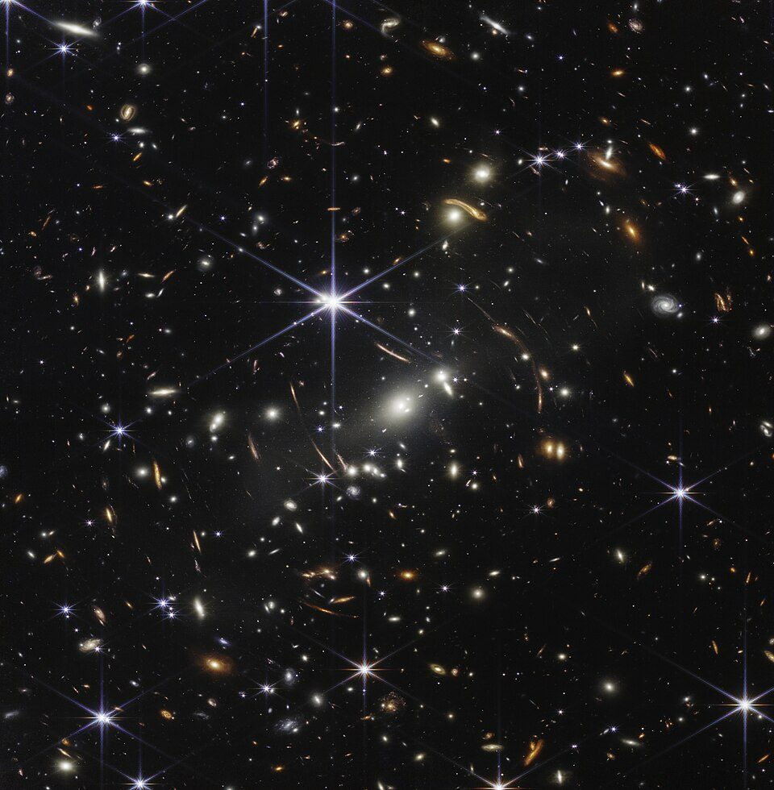

Clusters and the cosmic web
Galaxies gather into clusters, superclusters and filaments that form a gigantic web with huge voids in between.


If we could step back far enough from the universe, we would see that galaxies are not scattered at random. They form a kind of three-dimensional sponge or spider's web: the cosmic web.
From groups to superclusters
- Groups: a few dozen galaxies, like our Local Group.
- Clusters: hundreds to thousands of galaxies bound by gravity, wrapped in gas at tens of millions of degrees. The nearest large one is the Virgo cluster, 54 million light years away, with more than 1,300 galaxies.
- Superclusters: groupings of clusters hundreds of millions of light years across. In 2014 ours was described: Laniakea, "immense heaven" in Hawaiian, containing some 100,000 galaxies and spanning about 520 million light years.
Filaments and voids
Clusters sit at the nodes of the web, joined by filaments of galaxies and gas. Between them lie gigantic voids almost empty of galaxies, hundreds of millions of light years wide. The most famous, the Boötes void, is about 330 million light years across and holds only about 60 galaxies, when it should contain thousands.
This structure grew from tiny density differences in the young universe, visible in the cosmic microwave background, amplified over billions of years by the gravity of dark matter.
Gravitational lenses
A cluster's mass is so great that it curves the space around it and bends the light of galaxies behind it, like a giant magnifying glass. This produces arcs and multiple images of distant galaxies, just as Einstein predicted. Astronomers use these gravitational lenses as natural telescopes to see galaxies that would otherwise be invisible, and to weigh clusters, dark matter included.


Deep fields
In 1995 the Hubble team took a gamble and pointed the telescope for ten days at a tiny, apparently empty patch of sky. The result, the Hubble Deep Field, showed about 3,000 galaxies. In 2004 came the Ultra Deep Field, with about 10,000 in an area the size of a grain of sand held at arm's length. Multiplying across the whole sky gave hundreds of billions of galaxies, and later studies raised the figure to about two trillion.
Videos to understand it better
- How the Cosmic Web Was Formed | How the Universe WorksScience Channel · 73K views
Videos are from YouTube and belong to their creators. They only load when you click them. See all videos →